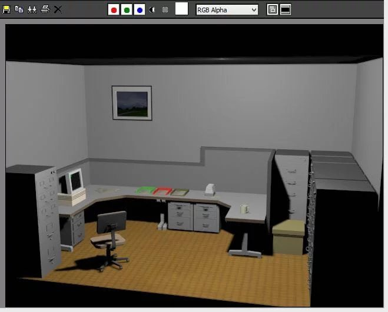
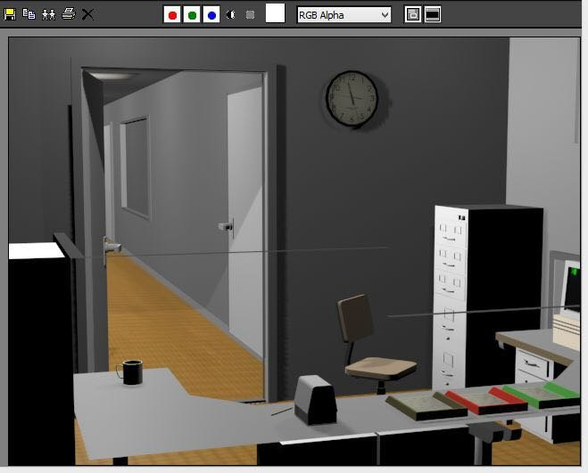
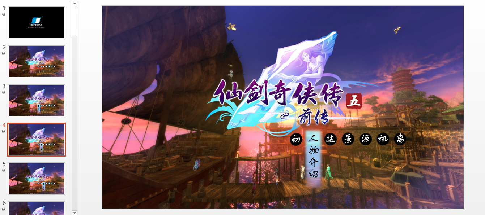
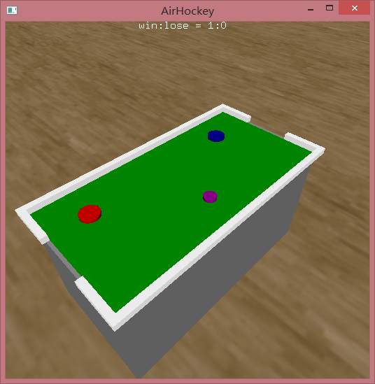
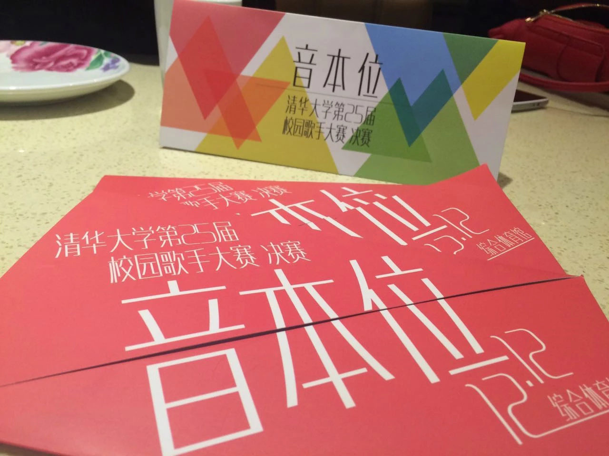

假装有题目——记大二上
感觉越来越摒弃文艺的风格了，毕竟每学期做这样一个总结就是为了记录大学期间自己的心路历程，记下自己一学期来的所思所想足矣。上学期感到找到了自己的节奏，这学期却想找点突破，多做一些事情，然而过程却并不全都那么顺利：
（本文很长，可以选择性阅读）
实践评比——“着实感悟了许多”
- 预答辩——出乎意料
上次总结也提到过暑假在景德镇的实践，新学期一开学就面临着实践评比问题。其实本来发起这个实践没有想参加评比的，只是想认识些朋友，和大家一起去开心地玩一玩，顺便体验一下社会调研的感觉。玩得确实挺开心，但到后来我的调研报告都一直拖着没写，就没抱着参加评比的想法。然而，没想到系里的评比要求所有支队都参加，那就去参加试试咯。
准备了一下ppt和要说的内容，一遍都没练过就去答辩了。我们支队顺序挺靠后，到我的时候人都走了一半了，就这样上去说，感觉还不错。更令我出乎意料的是，之后的评委点评给了我挺高的评价：“你的答辩时目前为止最对我胃口的，我很欣赏。”因为这是预答辩，评委一般都是指出哪里不好，以便于在正式答辩时注意，到我能给出表扬，真的好受宠若惊。那时我还真有种这次评比有戏的憧憬，说不定像情系母校一样，还真能得个不错的奖呢。不出意料，我的支队进入了最终的八支正式答辩队伍中。
- 正式答辩排练——饱受打击
也许因为预答辩时表现太好了，对于正式的答辩就没花太多心思，只是增添了一些详细内容和小故事。自己也没有演练过，还自我感觉良好，直到正式答辩的前一天晚上，有一个答辩排练，所有支队长先要试讲一遍。我就这样没怎么准备地去了，没想到给了我当头一棒。
前面的支队长都流利从容地展示出属于他们自己的十五分钟，而轮到我时，不知道怎么搞的，各种找不到过渡的话，只好不停地停顿重复。讲到一半我甚至申请让我再练一练，学长说你先讲完这次吧，整体给你提意见再说。于是我度过了最尴尬的十五分钟，到后面我都有点不知道我说的什么了。结果可想而知，学长给我提了一大堆意见，虽然也安慰我不要慌，但我心里还是很不是滋味，暗下决心我一定要把这次答辩做到最好！离开的时候，我保证“明天一定不会这样了！”，学长还说：“千万不要这样，再这样就可以算一次事故了。”
回到寝室已经十一点了，但我不能睡，我要好好准备这次答辩，不管结果如何！正式答辩是第二天中午，我还有时间。于是我花了一个多小时写讲稿（还真是第一次，之前不管演讲答辩还是pre都是随性而说的），花了一个多小时改ppt。然后对着ppt念了一遍稿，做了最后的修改才睡。第二天上午，其他的什么也没做，抱着电脑坐在阳台对着空气说了一上午，然而一点也不觉得枯燥。
- 正式答辩——虽败犹荣
转眼到了上场的时间了，紧张倒是不会，这种阵势还是不紧张的，再加上付出了那么多努力，肯定没问题！就这样，上台，鞠躬，十五分钟过去。我认为我成功地表现出所有我想表现出的东西，流畅而不卑不亢，对于最后的提问也应付地比较自如。回座位的路上听到同学们的赞扬：“讲得真棒”，我总算松了一口气。确实，对比昨天那个结结巴巴的少年，我想那个学长也肯定不敢相信。
结果我是不敢奢望了，对于一个连调研报告都没写完的支队，也就不可能获得好的奖项了。颁奖时，我们支队拿到了优胜奖，奖项中最末尾的，说实话当时我确实很难受，结束后还打电话倾诉，在荷塘旁边走了很久，直到下雨才回去。但后来我释然了，我准备那么努力是为了什么，不是为了一等奖，而是为了做出一个使自己满意、也使大家满意的答辩；为了证明自己，我不是遇到答辩就结结巴巴说不出话的懦夫！平时随性的答辩就可以做的不错，这样一个精心准备的答辩，一定更加精彩！我做到了，对于答辩本身，已经赢得了观众和自己的认可，那还要求什么呢？虽然最后失败了，没有做出好的成果我会反省，下次不再以玩的心态对待实践，但对于这次答辩，我相信我是成功的。
何况还有500块奖金，请大家出去搓一顿，多好~

学习——“心痛……”
从最后的结果来看，GPA下滑十分明显，心痛。考试感觉都还不错，但结果总是不理想，突然开始出现很多粗心算错的错误了T^T除了心酸，还有一个特点就是做了不少大作业，而且是乱七八糟的，不乏挺有意思的一些：
- 游戏动画制作
最有意思的当然是美双的课了，主要的课程是游戏动画制作，学3dsmax建模，占用了大半个学期的时间，其他的游戏作品赏析什么的都很水了。动画课的老师（男）首先就十分好评，飘逸的头发、得体的举止和着装、优雅迷人的声线、再加上人长的帅，特别喜欢上他的课，其他有趣的特点还有很多，就不一一说了。
这节课一上就上一天，周六一整天就跟着老师建模，还是很有趣的，最后作为考试的大作业是制作一段动画，题材不限，自由组队。我特别喜欢这个作业，但拖延症还是让我拖到了最后一个多星期才动手。从最开始向队友提出剧情设想，到设计场景地图，再到着手开始建模，我真是下了很大功夫。我们想模仿《史丹利的寓言》这个游戏，还原其中一种结局走向。本来想着这样有现成的场景可以照着做，而且是第一人称视角不用处理难搞的人，应该会很快。但真正开始建模后才发现其中的不易，从空的场景建出房间、办公桌、转椅、文件柜……再到一系列细小的物件，然后调整贴图、光照、摄像机……三个人奋战了几天几夜，总算把整个场景建立出来了，然而距离DDL只有一天多了！赶忙分工，我负责做动画，渲染出来交给剪辑的，还有负责配音的。直到DDL那天晚上才渲染出来，也没用V-ray什么的渲染器，就用的自带的，也没时间了。一堆动画片段赶忙交给剪辑的去合配音、加字幕、加特技、后期调整……折腾到最后一个小时，总算成功搞定交掉了，呼……
虽然最后看起来挺惊险，但做这个动画的过程真是一种享受，虽然每天每夜都在建模很累，但非常愉悦，我在做有意思的事情。能看到一个个物体在自己的努力下成形，并一步步变得真实起来，这是相当有成就感的一件事。


- 计算机文化基础
这个课学得特别杂，各种软件都学一点。最有意思的当然是ppt大作业了，就是做一个ppt介绍一个你喜欢的东西。听起来很简单，但这里的ppt是那种效果特别炫酷的，自主浏览的，一页的动画效果能有一长串的那种，简直像一个工程，做起来还是很复杂的，特别是如果你想做的好的话。
我早就想试试这个了，想尽全力做一个最起码自己满意的作品。我选择了仙五前传作为介绍的对象，真的很喜欢这部。过程就不说了，又是几天几夜，最终效果还算比较满意，高仿了游戏的开头和开始界面，各种动画效果也是有的一看的。想看ppt的可以找我发2333另外，这个作业40分中有20分是互评分，就是上传你的作品让其他同学评论。我当时还担心，因为我是自己选的这门课，同学都不认识，可能没人注意到我的作品。刚开始确实这样，我还有点失落，这么用心做的。直到有人发现了我的作品，评论大加赞赏，让我心里也为之一暖，之后好评就接踵而来了。互评成功拿到满分，整个大作业也只扣了1分。然而也没什么卵用，期末玩脱了，本来用来刷分的课考得一般般，但这都不重要啦，做这个作业还是很开心的。


- 计算机实时图形和动画技术
这是个先修课，忘了听谁的建议选的了…真是坑，老师讲得不敢恭维，每次课教室空荡荡的，还没几个人听。第一个作业就是用3dsmax做动画，直接吓走了一半的学生。我当时就想如果这个作业往后放放多好，等美双学差不多了做个小动画不是小事一桩。然而并不是…导致开学那段挣扎好长时间自学3dsmax，做出一段动画得分还不高。后来开始进入OpenGL的学习，作业依然坑（现在看来还好，但当时…）。本来是和室友一起选的，结果他中期因为漏交了一次作业直接退掉了。我仗着自学OpenGL有点入门了想坚持下来，也不知道是对是错，现在看来结果还不错，但过程…
中间还闹过一次退课风波，是因为在期末时感到压力太大，这个课还有大作业，感觉很难完成，再加上当时签到一次都没去过，感觉要跪，想手动退课。和老师邮件交涉了半天，感觉老师语气都不对了，才有一点松口放我退课的意思。戏剧的是，我找教务确认手动退课时却说，我们这届取消手动退课了，有老师同意也不行！我顿时想打自己脸！和老师关系闹成这，好不容易快可以了，结果又不能手动退课了！我心情真是崩溃的，赶紧又给老师发了诚恳的道歉邮件，老师最后算是没计较我，谢天谢地。
比较有意思的作业是全景图拼接和大作业，和班里转系过来的大腿组队。为了全景图周末借了单反去当了半天的摄影师，三脚架一立起来顿时赚足了回头率2333，拼接则交给了大腿，我只负责了一个显示；大作业是做一个桌面弹球的游戏，这个大作业的DDL也比较奇怪，在期末考试后一个星期。由于我期末考试结束较早，有一天早上感觉浪够了就开始看大作业，猛肝了一天发现好像也不是非常难，全靠自学竟然写得差不多能玩了，算了不少的立体几何和解析几何2333。最后收尾工作交给大腿一做，轻松搞定，现在没事还能打开玩一玩。

最后老师出奇的良心，我从来没想过我能上90，毕竟三次签到两次没去，还和老师闹过退课……最后得了93还是全班第二，把我吓傻了，一看作业除了动画都是满分，妈呀，啥也不说了，浓浓的师生情啊，应该感谢当时坚持下来的自己，虽然应该算是被迫的2333
- 其他
大学生心理训练与潜能开发，记通过。水，随便搞一搞就有优秀，算认识几个朋友吧。
大学物理B(2)，老师朱美红，坑，考试不怎么理想，最后还算可以接受吧，总算不用学物理了。
电子学基础，俗称玄学基础。真的上课基本都有好好听讲，考试前也很用心去复习，但期中期末都算错了大题…分数直接就跳水了，最后还往下调分，不说了T^T
复变函数，老师是杨幂的大伯，讲得还是很好的，而且只有期末考试算分，所以特别慌，基本都尽量去听课了而且好好听做了笔记。期末全是原题，反而不慌了，还是粗心扣了点分。
马原，不说了，政治课总是差…
数据结构，专业课，最后得分出乎意料，考试都比较一般，但签到全到、PA作业白盒全部满分貌似起了些作用，感觉最后得分还不错。
天文学导论，背了上千页的ppt，期末考试一百道基本都是选择，还是考的不好，刷分课又被我考得极其一般。
物理实验和电子学实验，写实验报告一秒钟变文科生…所以得分还算正常，写这种东西我还是比较有耐心的，每次报告得分也很稳定，都是8+/9，最后得分也基本是这样。刚开始写得特别认真，写完想裱起来。后来就觉得抄书没什么意思，自己提炼也很好，主要写得少啊。
西方文学选读，趁着这个课读了一些伊丽莎白时期的文学作品，考核为两篇论文，得分很中规中矩，是我英语课的正常分数。还有一个特点是女生多，上这个课基本没和男生坐过同桌，可能是因为我总去的比较晚…
社工——“抱负大，实干难”
- 团支书
这学期最出乎意料的就是班委换届时去竞选了团支书……本来这学期想不干班委了，好好在其他社工岗位做一做。结果有一天晚上接到辅导员消息，乔导想找我聊一聊，当时还在北大…快十二点回去找到乔导，乔导就开始安利竞选核心班委，但我内心一直在犹豫，真心觉得核心班委挺累的。我记得乔导有一个说法让我开始有点动摇，说我想在其他社工岗位干一干，刚开始都是做跑腿的工作，并没有自己的决策在里面，是帮人家干活，对自己提升不大；而核心班委则是带着全班同学做自己决定的事、办自己策划的活动，这是有很大区别的。回到宿舍后思考了很长时间，我决定还是试一试，说不定还真能干好呢，反正也是想锻炼锻炼自己，在哪不都一样嘛。于是第二天早上给了乔导答复：我要竞选团支书。
就这样，稍微准备了竞选演讲，就成了班里的团支书。不知不觉也当了一个学期，对自己的评价只能是一般。刚开始有很多想法，但慢慢发现都很难实现。把本职工作办得有趣就已经不容易了，这学期主要的事情应该有素测、团日、素拓、学生节、优良学风班评选，这些自认还是基本达到了预期的效果的。现在想想，准备这些的过程还是挺有趣的，团日选的129相关主题，前一天在美双课上还到处查129的资料、改ppt、准备要讲的内容，感觉像做一次关于129的pre；素拓去798定向越野，提前和体委、文委去踩点，活动当天也都玩得挺开心；学生节DV剧班长实力靠谱，导演加剪辑水平没的说。刚开始参与了几次讨论，后来有点跟不上大家的思路了233最后演了个小角色，体验了下被车撞的感觉；优良学风班是最有成就感的一件，首先感谢侯神写的申请表。那时在期中考试的压力下准备答辩，最后效果还不错，也顺利评上了校里的优良学风班。结果出来时看到群里“感谢写得一手好材料的支书”，还有辅导员马导说的“支书的展示能力也得到了评委们的认可！”让我觉得特别感动。以至于后来又一次马导向别的辅导员介绍我，就说的是“这是计45班的团支书，优良学风班答辩特别好的那个。”233
当然到现在班里工作也有很多困难，这时候同学们的时间凑到一起越来越不容易，找一个办活动的时间都很难。不过不管遇到什么大家一起想办法就好了，班委会上大家一起讨论的时候也很有趣。其他班委也都特别靠谱，班长大大尤其费心，作为前端好手，每次班级活动都能写出工程，有了写的那些网页活动逼格一下就上去了，总之各方面都挺靠谱。
希望下学期能不让自己的热情消退，继续干好本职工作之外多向自己想实现的想法靠近，既然做了这个团支书就做到最好（虽然现在自认不如前支书用心orz），起码做个让同学们都认可的支书。

- 学生会
我们系大二刚允许进入学生会，所以这是进入学生会的第一学期。在运营部的工作这学期主要有两个，管理微信平台和学生节外场设计。
一开始我就负责了微信平台，增长了不少推送排版什么的知识。每次发推送，虽然不是自己写的，只是审核排版发出来，但看到大家转发什么的还是莫名的开心。特别是有一次有一个五字班辅导员的采访推送，发过来的是一篇纯文字图片无任何排版，我就顺带做了一下排版发出去了。那个写这篇文章的人的称赞“运营部的就是厉害！”让我很是开心，最后这篇文章也成了我们系微信平台点击量最高的一篇（虽然主要是内容原因hhhh），还是很愉悦。
学生节外场其实也付出了许多，现场测量回去画草图、介绍我的构思、和各种公司打电话商谈、甚至还和有的面谈……然而到最后，由于资金、时间等各种原因，好多都没有实现，实现的几个效果也很一般，还是有点失落的。不过也没关系，算是积累了经验嘛，重要的是体验了准备的过程。另外在学生节当晚负责审一部分弹幕也是挺好玩的。
- 启创和星火
启创其实并没有加入，但刚开始有申请，选拔阶段是准备一个商业项目然后答辩。有人邀请我进入了一个组，做的是约饭的一个app。大家一起讨论app的流程框架、具体细节，算是感受了一下氛围吧。最后特别有意思的是，准备答辩ppt和商业策划书时我做的最主要的工作竟然是美工…原因是组长的ppt和文档真是有点…丑，我一不小心没忍住就把ppt美化了一下。大家一看不错，于是我就成了各种材料的美工orz想我一个计算机系的竟然成了美工也是挺醉的。最后答辩可能表现的比较一般吧，最终没有入选，不过也没有太放在心上。
星火是参加的星火组，上学期的事了，真心感觉这里挺和谐的。平常做了一些星火计划招募的工作，都不是很困难，但组里福利却是很棒，各种聚餐轰趴玩得倒是不亦乐乎。应该会继续待下去，还是很开心的。
其他
- 一二九合唱
这学期一二九算是一个比较有特色的事了，确实是一个增加全系同学凝聚力和荣誉感的好机会，也增长了不少知识吧。但练习占用的时间确实不少，周五和周日下午，再加上美双周六一天，周末就剩半天左右了。这学期出去浪的次数明显比大一下少了很多，可能与大作业多也有些关系，感觉从期中开始就一直在追各种DDL，真是累得不要不要的。我们唱的是德语歌，教唱歌的老师也很有意思，和美双的老师一样，都很有艺术气息，人也很幽默，到最后自己的唱歌技巧却没感觉提高多少…
最后我们系拿到了二等奖，站到台上唱到中间观众情不自禁地鼓掌证明了我们的实力，虽然形式等方面可能不如其他系，但展示出我们的实力就足够了。当天的一二九表情包网红也是增添了不少的乐趣，亲眼见证了一把网红的诞生2333

- 弹琴
从上次暑假开始，就慢慢捡起了小学毕业就放弃的钢琴。刚开始弹了两下发现还能弹两句，于是想重新练起来，本来为的是等七夕能给梁弹一曲，选择了千与千寻的片尾曲Always with me。之后慢慢发现弹钢琴好像也很有趣诶，于是一发不可收拾，吉他也扔一边了（这学期好像就没动过几次…）。无奈在学校没地方弹，当时也申请了学校的键盘队，可能因为刚捡起来，基本功还是差了许多，面试的时候被刷了。因此这学期只在外面跨年的时候，租的房子里正好有电子琴，弹了两下，其他就没再碰过了。
寒假回来总算有琴了，果断开始学。到现在为止已经学了两首：数码宝贝进化时的bgm“brave heart”和Fate/zero的第一个op“oath sign”。上次学的Always with me是舒缓的，这次的两个都是比较燃的，弹起来很带感啊，能把自己弹得想抖腿。现在没事无聊的时候弹弹琴已经成了一种消遣，虽然弹得不好，但也是一种享受。如果有想要这三首音频的可以找我233
- 读书
这学期读书确实比上学期差了好多，我检讨。早上越来越起不来了，原来读书的时间也没了。当时立的flag发现只看完了《雪国》，川端康成的这本看起来着实安静如雪，给人的感觉很淡。但我一直不太能理解这种书，特别是结局，可能还是素养不够不太懂吧。而《梦的解析》开了头之后一直看不下去orz
之后开始看《飘》，但看没多少就扔下了，一直也没拿起来读完，但从已经看得部分来看还是很棒的。中间因为西方文学选读看了狄更斯的Christmas choral，短篇小说，虚幻和真是之间穿梭，主人公从刻薄、无情，经历了许多后变得慷慨大方。一个很温暖的故事，很适合圣诞节那种氛围。
在接下来就没看了，学期末买了《龙族四》，结果走了还没到货，留到下学期吧，这个应该还是能看完的2333但除此之外还要再努力多看点啊，不能丢下读书这个习惯。
- 娱乐
值得一提的就是在学校看了校歌赛的决赛，费了千辛万苦拿到了两张票，不过值了；在北大看了吉他的演奏音乐会，独奏的loser这首歌印象很深刻，弹吉他的那个也好帅。

游戏的话这学期中没玩什么，主要通关了最终幻想13，最后算比较完美破关了，刷最终装备的时间占了总时间的三分之一。寒假玩起了饥荒，很喜欢。再到后来我哥steam上送我了一款正版饥荒和联机版，我就顺便打开steam逛了逛，发现新春折扣真的好多啊。于是剁手买了不少，现在正在补经典的Potal（传送门）系列和Tomb Raider（古墓丽影）系列，确实很赞。还买了Assassin’s Screed4（刺客信条4）等，以后慢慢来吧。另外欢迎加steam好友“wang-cy”。
- 未来方向
自从最后一次年级会后就一直在想，确实自己对于未来要走的方向还比较迷茫。初步打算这学期开始进实验室体验体验，之前一直没有在实验室搬过砖。学术新星计划本来要报的结果不小心错过了截止时间，搜狗实习最后时间什么的也没去成，所以想着这学期一定要试一试了；另外英语要开始着手了，准备学习一下把托福考了，现在英语真是感觉渣到爆了；另外还想拯救一下自己的GPA……
总之下学期可能先要找辅导员聊一聊，怎么进实验室、托福这种英语考试在哪些地方有用、成绩问题、以及未来方向的探讨，都要好好聊聊。越早确定自己的方向，越早可以开始朝这方面努力，然而现在还是一片迷茫。下学期找辅导员聊过之后要自己好好想一想了。
还有很多想做的吧，感觉还有很多没有尝试，很多没有坚持。这学期着实感觉有不少失败的经历，但也没什么，积累经验嘛，除了当时难受的一会，剩下的都是好处。总之，这学期失败是有的，收获更是有的。不知不觉写这么多，比团日总结都多了。新的学期即将开始，还是那句话，只求不让自己后悔的生活，下学期加油，嗯，就这样。